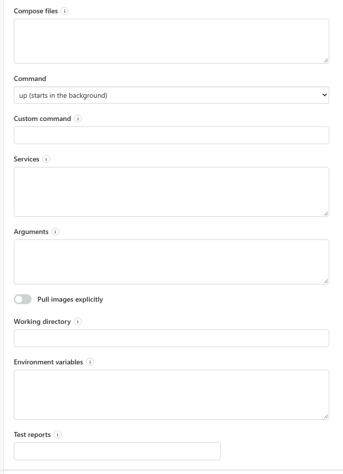

Docker Compose
Runs docker compose with a file, a command and services.
When to use it
Use it to start the services a test needs, such as a game server and its database, and to stop them again after the tests.
How to set it up
- Open the build configuration and click Settings › Build Steps.
- Click Add build step. Type
Docker Composein Filter step types if you like, then click the Docker Compose tile (group Containers). - Type a Step name, for example
Start services. - Fill in the fields described below.
- Optional: set Execute step, Conditions and Retry on failure. See The steps list and the step editor.
- Click Save.

Every field
| Field | What it does | Default | Example |
|---|---|---|---|
| Compose files | One file per line, each passed as -f. Empty lets docker compose find its default file. | Empty | docker-compose.test.yml |
| Command | up (starts in the background), down, build, pull, ps, logs, stop or Other command. | up | down |
| Custom command | Used with Other command only: the compose command, such as restart. | Empty | restart |
| Services | One service per line, named after the command. Empty means all of them. | Empty | gameserver |
| Arguments | One argument per line, placed before the services. | Empty | --wait |
| Pull images explicitly | Runs docker compose pull first, with the same files and services, before up or build. A failed pull stops the step. | Off | On |
| Working directory, Environment variables, Test reports | The same in every runner. See Fields every runner has. This runner has no container settings. |
A worked example
Start the test server, run the tests, then stop it. Step 1 Start services: Compose files docker-compose.test.yml, Command up, Arguments --wait. Step 2 runs the tests. Step 3 Stop services: Command down, with Execute step set to Even if some of the previous steps failed.
What you see when it runs
The console shows $ docker compose -f docker-compose.test.yml up --wait and the container events.
Problems and fixes
| Problem | What to do |
|---|---|
| The docker command was not found on this agent, or it has no compose command | Install Docker with Docker Compose, or put docker on the PATH. |
| The Docker Compose step has no command | Fill in Custom command for Other command. |
| Services stay running after a failed build | Add a down step that runs even if previous steps failed. |